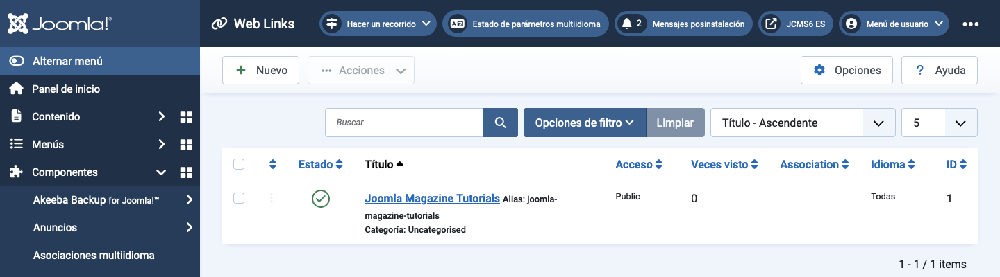

Joomla Help Screens
Liens Web
Descripción
El componente de Enlaces Web te permite gestionar enlaces a otros sitios web y organizarlos en categorías para mostrarlos en tu sitio. Opcionalmente, puedes permitir que los visitantes agreguen nuevos enlaces. Este componente no está incluido en Joomla 4 o versiones posteriores, pero puede obtenerse desde el sitio de descargas e instalarse como cualquier otra extensión.
Elementos Comunes
Algunos elementos de esta página se tratan en artículos de Ayuda separados:
- Barras de herramientas.
- Filtros de lista.
- Encabezados de columnas de lista.
- Ordenación de elementos de lista.
- Paginación de lista.
Cómo Acceder
Seleccione Componentes → Enlaces Web → Enlaces desde el menú del Administrador.
Captura de Pantalla

Traducido por openai.com